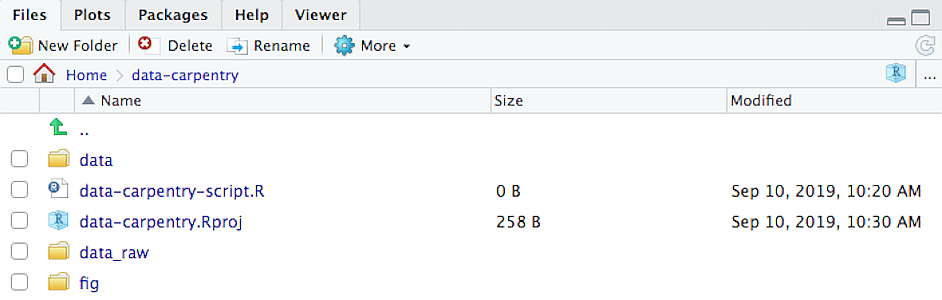

Before we start
0.1 Learning Objectives
- Be able to explain what R and RStudio are, what they are used for, and how they relate to each other.
- Describe the purpose of the RStudio Script, Console, Environment, and Plots panes.
- Organize files and directories for a set of analyses as an R Project, and understand the purpose of the working directory.
- Use the built-in RStudio help interface to search for more information on R functions.
- Demonstrate how to provide sufficient information for troubleshooting with the R user community.
1 What is R? What is RStudio?
The term “R” is used to refer to both the programming language and the software that interprets the scripts written using it.
RStudio is currently a very popular way to not only write your R scripts but also to interact with the R software. To function correctly, RStudio needs R and therefore both need to be installed on your computer.
2 Why learn R?
2.1 R does not involve lots of pointing and clicking, and that’s a good thing
The learning curve might be steeper than with other software, but with R, the results of your analysis do not rely on remembering a succession of pointing and clicking, but instead on a series of written commands, and that’s a good thing! So, if you want to redo your analysis because you collected more data, you don’t have to remember which button you clicked in which order to obtain your results. With a stored series of commands (this is your script), you can repeat running them and R will process the new dataset exactly the same way as before.
Working with scripts makes the steps you used in your analysis clear, and the code you write can be inspected by someone else who can give you feedback and spot mistakes.
Working with scripts forces you to have a deeper understanding of what you are doing, and facilitates your learning and comprehension of the methods you use.
2.2 R code is great for reproducibility
Reproducibility is when someone else (including your future self) can obtain the same results from the same dataset when using the same analysis.
R integrates with other tools to generate manuscripts from your code. If you collect more data, or fix a mistake in your dataset, the figures and the statistical tests in your manuscript are updated automatically.
An increasing number of journals and funding agencies expect analyses to be reproducible, so knowing R will give you an edge with these requirements.
2.3 R is interdisciplinary and extensible
With 10,000+ packages that can be installed to extend its capabilities, R provides a framework that allows you to combine statistical approaches from many scientific disciplines to best suit the analytical framework you need to analyze your data. For instance, R has packages for image analysis, GIS, time series, population genetics, and a lot more.
2.4 R works on data of all shapes and sizes
The skills you learn with R scale easily with the size of your dataset. Whether your dataset has hundreds or millions of lines, it won’t make much difference to you.
R is designed for data analysis. It comes with special data structures and data types that make handling of missing data and statistical factors convenient.
R can connect to spreadsheets, databases, and many other data formats, on your computer or on the web.
2.5 R produces high-quality graphics
The plotting functionalities in R are endless, and allow you to adjust any aspect of your graph to convey most effectively the message from your data.
2.6 R has a large and welcoming community
Thousands of people use R daily. Many of them are willing to help you through mailing lists and websites such as Stack Overflow, or on the RStudio community.
2.7 Not only is R free, but it is also open-source and cross-platform
Anyone can inspect the source code to see how R works. Because of this transparency, there is less chance for mistakes, and if you (or someone else) find some, you can report and fix bugs.
3 Knowing your way around RStudio
Let’s start by learning about RStudio, which is an Integrated Development Environment (IDE) for working with R.
The RStudio IDE open-source product is free under the Affero General Public License (AGPL) v3. The RStudio IDE is also available with a commercial license and priority email support from RStudio, PBC.
We will use RStudio IDE to write code, navigate the files on our computer, inspect the variables we are going to create, and visualize the plots we will generate. RStudio can also be used for other things (e.g., version control, developing packages, writing Shiny apps) that we will not cover during the workshop.

RStudio is divided into 4 “panes”:
- The Source for your scripts and documents (top-left, in the default layout)
- Your Environment/History (top-right) which shows all the objects in your working space (Environment) and your command history (History)
- Your Files/Plots/Packages/Help/Viewer (bottom-right)
- The R Console (bottom-left)
The placement of these panes and their content can be customized (see menu, Tools -> Global Options -> Pane Layout). For ease of use, settings such as background color, font color, font size, and zoom level can also be adjusted in this menu (Global Options -> Appearance).
One of the advantages of using RStudio is that all the information you need to write code is available in a single window. Additionally, with many shortcuts, autocompletion, and highlighting for the major file types you use while developing in R, RStudio will make typing easier and less error-prone.
4 Getting set up
It is good practice to keep a set of related data, analyses, and text self-contained in a single folder, called the working directory. All of the scripts within this folder can then use relative paths to files that indicate where inside the project a file is located (as opposed to absolute paths, which point to where a file is on a specific computer). Working this way allows you to move your project around on your computer and share it with others without worrying about whether or not the underlying scripts will still work.
RStudio provides a helpful set of tools to do this through its “Projects” interface, which not only creates a working directory for you, but also remembers its location (allowing you to quickly navigate to it) and optionally preserves custom settings and (re-)open files to assist resume work after a break. Go through the steps for creating an “R Project” for this tutorial below.
- Start RStudio.
- Under the
Filemenu, click onNew Project. ChooseNew Directory, thenNew Project. - Enter a name for this new folder (or “directory”), and choose a convenient location for it. This will be your working directory for the rest of the day (e.g.,
~/data-carpentry). - Click on
Create Project. - Download the code handout, place it in your working directory and rename it (e.g.,
data-carpentry-script.R). - (Optional) Set Preferences to ‘Never’ save workspace in RStudio.
A workspace is your current working environment in R which includes any user-defined object. By default, all of these objects will be saved, and automatically loaded, when you reopen your project. Saving a workspace to .RData can be cumbersome, especially if you are working with larger datasets, and it can lead to hard to debug errors by having objects in memory you forgot you had. Therefore, it is often a good idea to turn this off. To do so, go to Tools –> ‘Global Options’ and select the ‘Never’ option for ‘Save workspace to .RData’ on exit.’

4.1 Organizing your working directory
Using a consistent folder structure across your projects will help keep things organized, and will help you to find/file things in the future. This can be especially helpful when you have multiple projects. In general, you may create directories (folders) for scripts, data, and documents.
data_raw/&data/Use these folders to store raw data and intermediate datasets you may create for the need of a particular analysis. For the sake of transparency and provenance, you should always keep a copy of your raw data accessible and do as much of your data cleanup and preprocessing programmatically (i.e., with scripts, rather than manually) as possible. Separating raw data from processed data is also a good idea. For example, you could have filesdata_raw/tree_survey.plot1.txtand...plot2.txtkept separate from adata/tree.survey.csvfile generated by thescripts/01.preprocess.tree_survey.Rscript.documents/This would be a place to keep outlines, drafts, and other text.scripts/This would be the location to keep your R scripts for different analyses or plotting, and potentially a separate folder for your functions (more on that later).- Additional (sub)directories depending on your project needs.
For this workshop, we will need a data_raw/ folder to store our raw data, and we will use data/ for when we learn how to export data as CSV files, and a fig/ folder for the figures that we will save.
- Under the
Filestab on the right of the screen, click onNew Folderand create a folder nameddata_rawwithin your newly created working directory (e.g.,~/data-carpentry/). (Alternatively, typedir.create("data_raw")at your R console.) Repeat these operations to create adataand afigfolder.
We are going to keep the script in the root of our working directory because we are only going to use one file. Later, when you start create more complex projects, it might make sense to organize scripts in sub-directories.
Your working directory should now look like this:

4.2 The working directory
The working directory is an important concept to understand. It is the place from where R will be looking for and saving the files. When you write code for your project, it should refer to files in relation to the root of your working directory and only need files within this structure.
RStudio assists you in this regard and sets the working directory automatically to the directory where you have placed your project in. If you need to check it, you can use getwd(). If for some reason your working directory is not what it should be, you can change it in the RStudio interface by navigating in the file browser where your working directory should be, and clicking on the blue gear icon “More”, and select “Set As Working Directory”. Alternatively you can use setwd("/path/to/working/directory") to reset your working directory. However, your scripts should not include this line because it will fail on someone else’s computer.
5 Interacting with R
The basis of programming is that we write down instructions for the computer to follow, and then we tell the computer to follow those instructions. We write, or code, instructions in R because it is a common language that both the computer and we can understand. We call the instructions commands and we tell the computer to follow the instructions by executing (also called running) those commands.
There are two main ways of interacting with R: by using the console or by using script files (plain text files that contain your code). The console pane (in RStudio, the bottom left panel) is the place where commands written in the R language can be typed and executed immediately by the computer. It is also where the results will be shown for commands that have been executed. You can type commands directly into the console and press Enter to execute those commands, but they will be forgotten when you close the session.
Because we want our code and workflow to be reproducible, it is better to type the commands we want in the script editor, and save the script. This way, there is a complete record of what we did, and anyone (including our future selves!) can easily replicate the results on their computer.
RStudio allows you to execute commands directly from the script editor by using the Ctrl + Enter shortcut (on Macs, Cmd + Return will work, too). The command on the current line in the script (indicated by the cursor) or all of the commands in the currently selected text will be sent to the console and executed when you press Ctrl + Enter. You can find other keyboard shortcuts in this RStudio cheatsheet about the RStudio IDE.
At some point in your analysis you may want to check the content of a variable or the structure of an object, without necessarily keeping a record of it in your script. You can type these commands and execute them directly in the console. RStudio provides the Ctrl + 1 and Ctrl + 2 shortcuts allow you to jump between the script and the console panes.
If R is ready to accept commands, the R console shows a > prompt. If it receives a command (by typing, copy-pasting or sent from the script editor using Ctrl + Enter), R will try to execute it, and when ready, will show the results and come back with a new > prompt to wait for new commands.
If R is still waiting for you to enter more data because it isn’t complete yet, the console will show a + prompt. It means that you haven’t finished entering a complete command. This is because you have not ‘closed’ a parenthesis or quotation, i.e. you don’t have the same number of left-parentheses as right-parentheses, or the same number of opening and closing quotation marks. When this happens, and you thought you finished typing your command, click inside the console window and press Esc; this will cancel the incomplete command and return you to the > prompt.
6 Seeking help
6.1 Searching function documentation with ? and ??
If you need help with a specific function, let’s say mean(), you can type ?mean or press F1 while your cursor is on the function name. If you are looking for a function to do a particular task, but don’t know the function name, you can use the double question mark ??, for example ??kruskall. Both commands will open matching help files in RStudio’s help panel in the lower right corner. You can also use the help panel to search help directly, as seen in the screenshot.

6.2 Automatic code completion
When you write code in RStudio, you can use its automatic code completion to remind yourself of a function’s name or arguments. Start typing the function name and pay attention to the suggestions that pop up. Use the up and down arrow to select a suggested code completion and Tab to apply it. You can also use code completion to complete function’s argument names, object, names and file names. It even works if you don’t get the spelling 100% correct.
6.3 Package vignettes and cheat sheets
In addition to the documentation for individual functions, many packages have vignettes – instructions for how to use the package to do certain tasks. Vignettes are great for learning by example. Vignettes are accessible via the package help and by using the function browseVignettes().
There is also a Help menu at the top of the RStudio window, that has cheat sheets for popular packages, RStudio keyboard shortcuts, and more.
6.4 Finding more functions and packages
RStudio’s help only searches the packages that you have installed on your machine, but there are many more available on CRAN and GitHub. To search across all available R packages, you can use the website rdocumentation.org. Often, a generic Google or internet search “R <task>” will send you to the appropriate package documentation or a forum where someone else has already asked your question. Many packages also have websites with additional help, tutorials, news and more (for example tidyverse.org).
6.5 Dealing with error messages
Don’t get discouraged if your code doesn’t run immediately! Error messages are common when programming, and fixing errors is part of any programmer’s daily work. Often, the problem is a small typo in a variable name or a missing parenthesis. Watch for the red x’s next to your code in RStudio. These may provide helpful hints about the source of the problem.

If you can’t fix an error yourself, start by googling it. Some error messages are too generic to diagnose a problem (e.g. “subscript out of bounds”). In that case it might help to include the name of the function or package you’re using in your query.
6.6 Asking for help
If your Google search is unsuccessful, you may want to ask other R users for help. There are different places where you can ask for help. During this workshop, don’t hesitate to talk to your neighbor, compare your answers, and ask for help. You might also be interested in organizing regular meetings following the workshop to keep learning from each other. If you have a friend or colleague with more experience than you, they might also be able and willing to help you.
Besides that, there are a few places on the internet that provide help:
- Stack Overflow: Many questions have already been answered, but the challenge is to use the right words in your search to find them. If your question hasn’t been answered before and is well crafted, chances are you will get an answer in less than 5 min. Remember to follow their guidelines on how to ask a good question.
- The R-help mailing list: it is used by a lot of people (including most of the R core team). If your question is valid (read its Posting Guide), you are likely to get an answer very fast, but the tone can be pretty dry and it is not always very welcoming to new users.
- If your question is about a specific package rather than a base R function, see if there is a mailing list for the package. Usually it’s included in the DESCRIPTION file of the package that can be accessed using
packageDescription("<package-name>"). - You can also try to contact the package author directly, by emailing them or opening an issue on the code repository (e.g., on GitHub).
- There are also some topic-specific mailing lists (GIS, phylogenetics, etc…). The complete list is on the R mailing lists website.
The key to receiving help from someone is for them to rapidly grasp your problem. Thus, you should be as precise as possible when describing your problem and help others to pinpoint where the issue might be. Try to…
Use the correct words to describe your problem. Otherwise you might get an answer pointing to the misuse of your words rather than answering your question.
Generalize what you are trying to do, so people outside your field can understand the question.
Reduce what does not work to a simple reproducible example. For instance, instead of using your real data set, create a small generic one. For more information on how to write a reproducible example see this article from the reprex package. Learning how to use the reprex package is also very helpful for this.
Include the output of
sessionInfo()in your question. It provides information about your platform, the versions of R and the packages that you are using. As an example, here you can see the versions of R and all the packages that we are using to run the code in this lesson:
sessionInfo()R version 4.2.0 (2022-04-22)
Platform: x86_64-apple-darwin17.0 (64-bit)
Running under: macOS Big Sur/Monterey 10.16
Matrix products: default
BLAS: /Library/Frameworks/R.framework/Versions/4.2/Resources/lib/libRblas.0.dylib
LAPACK: /Library/Frameworks/R.framework/Versions/4.2/Resources/lib/libRlapack.dylib
locale:
[1] en_AU.UTF-8/en_AU.UTF-8/en_AU.UTF-8/C/en_AU.UTF-8/en_AU.UTF-8
attached base packages:
[1] stats graphics grDevices utils datasets methods base
other attached packages:
[1] RSQLite_2.2.14 forcats_0.5.1 stringr_1.4.0 dplyr_1.0.9
[5] purrr_0.3.4 readr_2.1.2 tidyr_1.2.0 tibble_3.1.7
[9] ggplot2_3.3.6 tidyverse_1.3.1 knitr_1.39
loaded via a namespace (and not attached):
[1] Rcpp_1.0.8.3 lubridate_1.8.0 assertthat_0.2.1 digest_0.6.29
[5] utf8_1.2.2 R6_2.5.1 cellranger_1.1.0 backports_1.4.1
[9] reprex_2.0.1 evaluate_0.15 httr_1.4.3 pillar_1.7.0
[13] rlang_1.0.2 readxl_1.4.0 rstudioapi_0.13 blob_1.2.3
[17] rmarkdown_2.14 bit_4.0.4 munsell_0.5.0 broom_0.8.0
[21] compiler_4.2.0 modelr_0.1.8 xfun_0.31 pkgconfig_2.0.3
[25] htmltools_0.5.2 tidyselect_1.1.2 codetools_0.2-18 fansi_1.0.3
[29] crayon_1.5.1 tzdb_0.3.0 dbplyr_2.2.1 withr_2.5.0
[33] grid_4.2.0 jsonlite_1.8.0 gtable_0.3.0 lifecycle_1.0.1
[37] DBI_1.1.3 magrittr_2.0.3 scales_1.2.0 cli_3.3.0
[41] stringi_1.7.6 cachem_1.0.6 fs_1.5.2 xml2_1.3.3
[45] ellipsis_0.3.2 generics_0.1.2 vctrs_0.4.1 tools_4.2.0
[49] bit64_4.0.5 glue_1.6.2 hms_1.1.1 fastmap_1.1.0
[53] yaml_2.3.5 colorspace_2.0-3 rvest_1.0.2 memoise_2.0.1
[57] haven_2.5.0 7 How to learn more after the workshop?
The material we cover during this workshop will give you a taste of how you can use R to analyze data for your own research. However, to do advanced operations such as cleaning your dataset, using statistical methods, or creating beautiful graphics you will need to learn more.
The best way to become proficient and efficient at R, as with any other tool, is to use it to address your actual research questions. As a beginner, it can feel daunting to have to write a script from scratch, and given that many people make their code available online, modifying existing code to suit your purpose might get first hands-on experience using R for your own work and help you become comfortable eventually creating your own scripts.

8 More resources
8.0.1 More about R
- The Introduction to R can also be dense for people with little programming experience but it is a good place to understand the underpinnings of the R language.
- The R FAQ is dense and technical but it is full of useful information.
- To stay up to date, follow
#rstatson twitter. Twitter can also be a way to get questions answered and learn about useful R packages and tipps (e.g., [@RLangTips])
8.0.2 How to ask good programming questions?
- The rOpenSci community call “How to ask questions so they get answered”, (rOpenSci site and video recording) includes a presentation of the reprex package and of its philosophy.
- blog.Revolutionanalytics.com and this blog post by Jon Skeet have comprehensive advice on how to ask programming questions.
Page built on: 📆 2022-06-28 ‒ 🕢 12:11:21